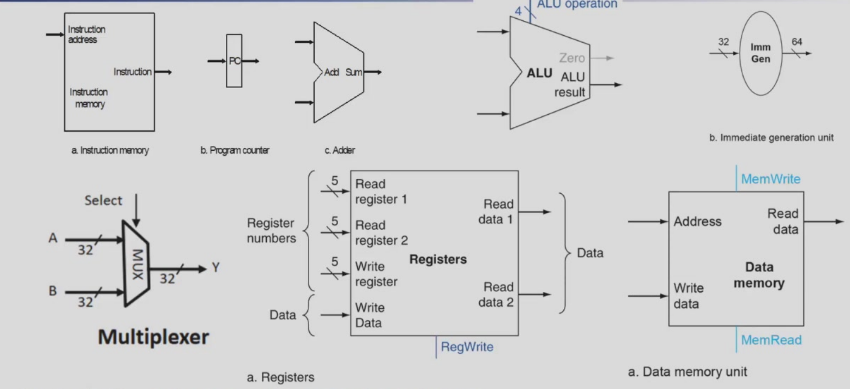
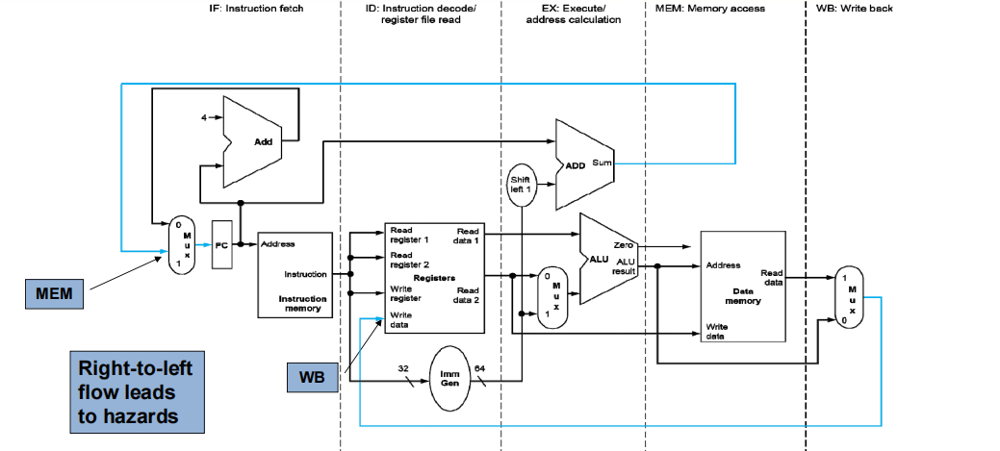

Chapter4：处理器
computer consists of CPU, memory, and I/O interface.CPU consists of Control Unit and Datapath. Datapath is compose of Path(multiplexo rs), Registers and ALU.

仙之人兮列如麻
4.1 Introduction
For every instruction , the first two steps are fetch(the instruction from the memory)取址 and decode(and read the registers).
Next steps depend on the instruction class
-
Memory-reference: load and store
-
Arithmetic-logical R型指令
-
branches B型指令
Depending on instuction class
-
Use ALU to calculate
-
Arithmetic result
-
Memory address for load and store
-
Branch comparison
-
Access data memory for load/store
-
PC <-- target address PC + 4
Note
跳指的是程序根据条件跳转到某个指定地址，跳过顺序执行的指令。 不跳指的是程序继续顺序执行，PC更新为下一条指令的地址（PC + 4）。
J型指令不需要ALU计算。 U型指令也不需要ALU计算，但是需要寄存器写回。
ALU
算术逻辑运算器ALU，即运算器
-
5 operations
-
"Set on Less Than": if A < B then result = 1, else result = 0
000: And
001: Or
010: Add
110: Sub
111: Slt
Memory
存储器:
-
可分为指令存储器与数据存储器
-
指令存储器设定为只读：输入指令地址，输出指令
-
数据存储器设定为可读可写，通过MemRead与MemWrite控制。按地址读出数据输出，或者将写数据写入地址所指存储器单元。
Register
-
state element
-
can be controlled by Write signal
Write信号置0，数据输出保持原状态不变；置1，在有效时间边沿到来，数据输出为数据输入值。
e.g. Description of 32*64bits register
Module Register (
input rst, clk,Regwrite,
input [4:0] Rs1_addr, Rs2_addr, Wt_addr,
input [63:0] Wt_data,
output [63:0] Rs1_data, Rs2_data
);
reg [63:0] register [1:31]; // r1-r31
integer i;
assign Rs1_data = (Rs1_addr==0)? 0 : register[Rs1_addr]; // read
assign Rs2_data = (Rs2_addr==0)? 0 : register[Rs2_addr];
always@(posedge clk or posedge rst) begin
if (rst) begin
for (i=1; i<=31; i=i+1) begin
register[i] <= 0; // reset
end
end
else if (Regwrite==1 && Wt_addr!=0) begin
register[Wt_addr] <= Wt_data; // write
end
end
endmodule
The other Elements
Immediate Generation Unit
-
输入指令产生立即数的逻辑功能
-
根据指令的类型(加载、存储或分支指令)，产生相应立即数
-
转移指令偏移量的左移位的功能
-
立即数字段符号扩展为64位结果输出
共有五种产生立即数的指令类型，因此需要3位的immsel来选择指令类型。
Branch最低位补0，因为这是不填进去的。
这里老师讲的挺清楚的，就是书本上是有问题的，immsel写的两位，因为只写了3还是4种，而我们注意到，这几种产生立即数的opcode的前两位甚至还有重复的，因此我们至少要用三位(自主定义index)抑或是直接使用7位的opcode来select。
数字加某位指的是扩展该位，阿弥诺斯。
这里还漏了一个U型指令，比如lui，lui是干什么的呢，之前其实学习过，lui rd constant
指令格式就是inst[31:12] rd opcode，因此我们写出这个立即数形式应该类似于{22{inst[31]},inst[31:12],12b'0}，注意补的12位低位0。

取址、译码、执行、访存、写回
第一步，取址
第二步，(译码)把inst[19:15]跟inst[24:20]分别拉去rs1与rs2，读出数字即read data1\2的过程。
第三步，control会把opcode fun3\7送进来产生加法控制信号，然后运算得到一个result。
第四步就是把result写回rd寄存器。
那addi呢？
没有rs2、fun7，而是20位的imm，因此需要immediate generation unit。
load
store
beq(byd干什么的我都忘了)
原来是等于跳转，抱歉长官刚刚没有认出你。
jal是用于跳转的，jal rd, L
其中rd存储的是PC+4(下一条指令的位置)，而L是跳转的地址。
controler
单周期在外部跟时间有关，然而内部就是一个电路而已。
building controller
- information comes from the 32 bits instruction
- selecting the operations to perform(ALU read/write etc.)
- controlling the flow of data(multiplexor input)
- ALU's operations based on instruction type or function code
从二进制翻译成反汇编就根据opcode，可以看出是哪一种类型的指令，然后funtion3可以用来细分是该类型的那个指令，唯一不确定的是ALU内部的操作。
以下取自QJJ老师的笔记本，所谓的first/second level老师并没有这样讲及。
ALU真值表
4.6 Exception
CPU内部产生的叫做异常(exception)，外部产生的叫做中断(Interrupt)。
出现这一情况会进行跳转使用特权指令进行处理。
处理异常，统一的入口地址，再有子程序跳到不同地方。
或是向量中断，直接跳到不同的地址，就是基地址加偏移量。
异常解决： + 保护CPU现场，进入异常 + 记录当前发生异常的断点指令的地址(PC的值)，也就是存在mEPC(m代表machine，机器模式)寄存器中 + 产生的原因：mcause，有编码 + 64位但是大部分用不到 + 处理中断异常 + jump to handler，mtvec存储地址。像risc-v是跳转到统一入口的handle地址，向量中断其存储的就是基地址 + 退出异常,恢复正常操作 也并不是立刻退出啦
Handler Actions
- read cause and transfer to relevant handler
- determine action required
- if restartable
- take corrective action
- use sepc to return to program
- otherwise
- terminate program
- report error using SEPC SCAUSE
特权指令:CSR指令
M模式特权最高,access everything,并非安全.
Part2!!!!!!!!!!!!!!!!!!!!!!!!!!!!!!!!!
流水线来喽.
流水线其实就是要把五个阶段都实现一遍.
什么,什么阶段?让我们复习一下:取址 译码 执行 访存 写回.
思想?借用洗衣服的思想,可以别的衣服烘干的时候我拿去洗.思考应该是需要尽可能的balance每个阶段.
Pipeline Speedup + If all stages are balanced 平衡的时候，每个阶段相同，就可以第一件衣服烘干的时候洗衣服了。
所以$time_{between instructions} = \frac{time_{scpu\ between\ instruction}}{Number\ of\ stages}$
因此speedup加速比就等于$number\ of\ stage$
-
If stages are not balanced 加速比就稍低
-
对于单条指令的执行 反而可能更慢
流水线实现的是指令的并行处理，也就是其吞吐量(通过率)，但是每条指令实际经历的处理时间并没有改变。
RISC-V适合流水线的原因：
+ 32位指令
所有的指令都是固定的 32 位，这使得每条指令都可以在一个周期内从内存中取出并解码。这相比于 x86 架构，后者的指令长度可以变化，从 1 字节到 17 字节不等，导致取指和解码的过程更加复杂和时间不确定。
实际上x86是通过将复杂指令划分为微指令来实现流水线的。
+ 指令格式少
可以在一个阶段中解码并读取寄存器
+ 加载/存储地址
加载和存储指令的地址计算通常发生在流水线的第 3 阶段（即执行阶段），而内存访问则在第 4 阶段进行。这种设计使得内存访问可以与其他操作并行进行，进一步提高了流水线的效率。

两条蓝色的线体现了"从右往左"的不一样路径，WB表示了数据竞争，MEM表示了控制冒险。